Parameterized Queries¶
Parameterized queries allow you to place parameters in an SQL query instead of a constant value. A parameter takes a value only when the query is executed, which allows the query to be reused with different values. Any string between double curly braces {{ }}will be treated like a parameter. A widget will appear above the results pane, so you change the parameter value.
The following sections explains how to add different types of parameters to your queries.
Query Parameter Types¶
You can define several types of parameters in your query.
- Text- Provide a text value
- Number- Provide a numeric value
- Dropdown List- You can restrict the parameters by creating a drop-down. You have to enter the values manually.
- Query Based Dropdown List- The options in the drop-down will come from the query result. You need to save the query that will generate the options.
-
Date & Time related options-You have several options to parameterize date and timestamp values, including ranges. You can select from the given options for the required precision.
Option Type Precision Date Date Day Date and Time Timestamp Minute Date and Time (with seconds) Timestamp Second Date Range Date Date and Time Range Timestamp Date and Time Range (with seconds) Timestamp
Adding a Parameter¶
In this section, we will present an example query that does not include any parameters. Subsequently, we will provide a step-by-step explanation of how parameters can be added to enhance the flexibility and customization of the query. By incorporating parameters, you can dynamically adjust the query based on specific criteria or user inputs.
Example- Query without Parameter
SELECT
customer_id,
sum(order_amount) AS total_order_amount_per_customer,
annual_income,
gender,
age,
marital_status,
occupation,
social_class,
country
FROM
icebase.retail.orders_enriched
WHERE
marital_status = 'Single' # hard coded value provided
GROUP BY
1,3,4,5,6,7,8,9
ORDER BY
2 DESC
limit 10
The following is an example of how you might use a parameterized query for the above query.
Follow the below steps to add a parameter to your query.
-
Click on the ‘Queries’ tab and open your query to edit.
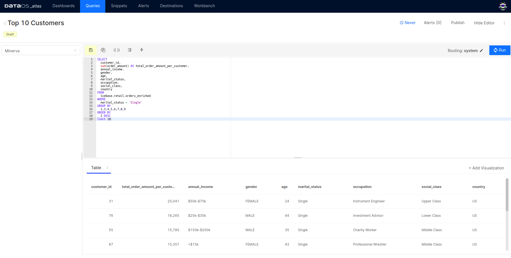
Query editor -
Click on
{{ }}(keyboard shortcutCmd + P). The parameter is inserted at the text caret, and the Add Parameter dialog appears. - Keyword: The keyword that represents the parameter in the query.
- Title: The title that appears over the widget. By default, the title is the same as the keyword.
-
Type: Supported types are Text, Number, Date, Date and Time, Date and Time (with Seconds), Dropdown List, and Query Based Dropdown List. The default is Text.
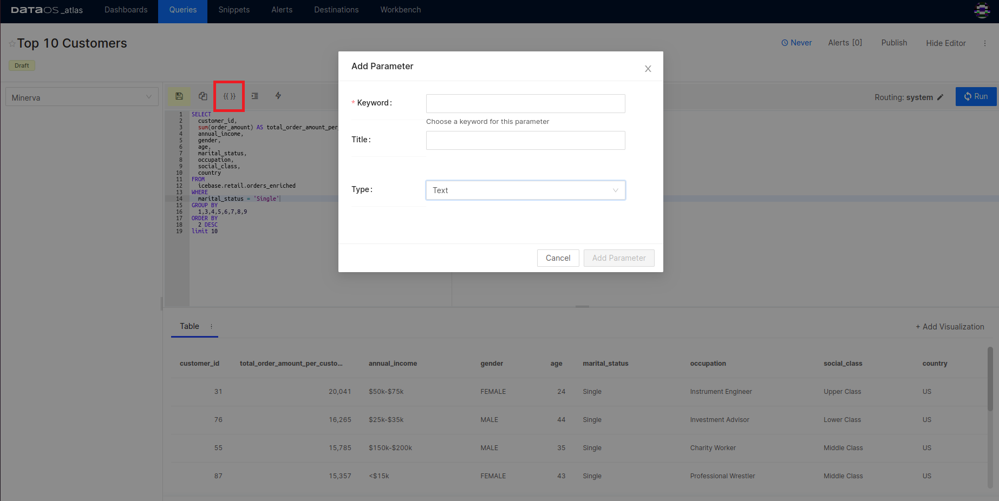
Inputs while adding parameters -
Enter the keyword, optionally override the title, and select the parameter type.
- Click Add Parameter. A parameter widget appears on the screen.
- In the parameter widget, set the parameter value.
-
Click Apply Changes.
This will run the query with the given parameter value. In this example, a parameter of type text is inserted.
Enter the parameter value in the single quote for text type.
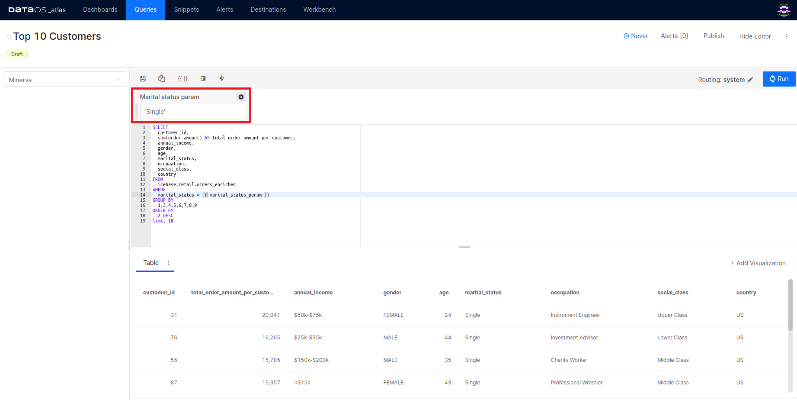
Query with a text parameter
You can use the same parameter in a query multiple times.
Adding Different Parameter Types¶
Date¶
Select the parameter type ‘Date’ while adding a parameter in your query.
You will get a calendar-picking interface to provide the date values for your queries. Choose the date and click on ‘Apply changes’ to execute the query.
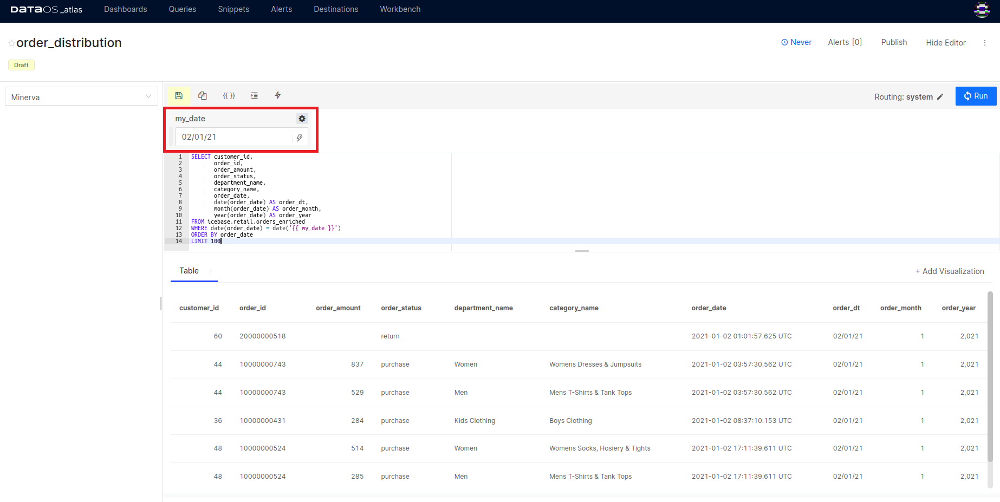
Example Query:
SELECT customer_id,
order_id,
order_amount,
order_status,
department_name,
category_name,
order_date,
date(order_date) AS order_dt,
month(order_date) AS order_month,
year(order_date) AS order_year
FROM icebase.retail.orders_enriched
WHERE date(order_date) = date('{{ my_date }}') # Date parameter added
ORDER BY order_date
LIMIT 100
Date Range¶
When you select the Date Range parameter, two markers called .start
and .end are inserted, which signify the beginning and end of your chosen date range.
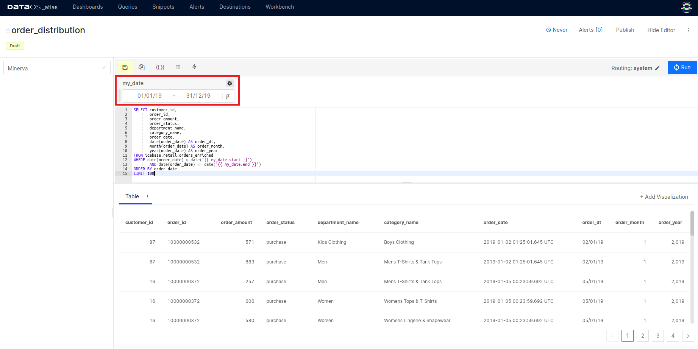
Options with Date and Date Range Parameter Values
When you add a Date or Date Range parameter to your query, the selection widget shows a blue lightning icon. Click the icon to see dynamic values like “Today”, “Yesterday”, "Last Year" or "Last 50 Days", etc.
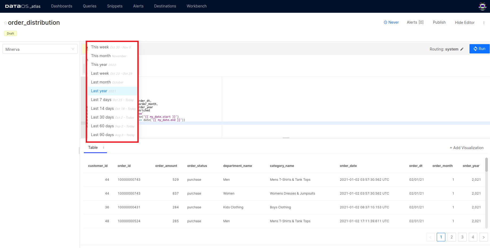
Example Query:
SELECT customer_id,
order_id,
order_amount,
order_status,
department_name,
category_name,
order_date,
date(order_date) AS order_dt,
month(order_date) AS order_month,
year(order_date) AS order_year
FROM icebase.retail.orders_enriched
WHERE date(order_date) > date('{{ my_date.start }}')
AND date(order_date) <= date('{{ my_date.end }}')
ORDER BY order_date
LIMIT 100
Dropdown List¶
When you want to restrict the possible values for the query parameter, you can use dropdown lists. Atlas offers two types of dropdown lists- one where you provide the possible options manually and another where allowed options are generated from a query result. It also allows you to select multiple values.
When the Dropdown option for the parameter type is selected from the parameter settings panel, a text box appears where you can enter your allowed values, each one separated by a new line.
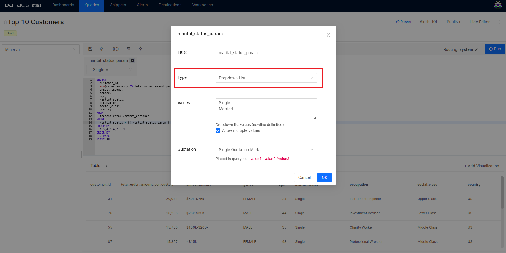
Once the parameter is defined, you can see the dropdown list in the Parameter Widget. Select the option(s) and apply changes to run the query.
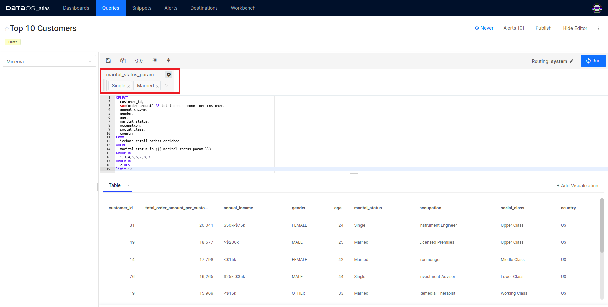
Example Query:
SELECT
customer_id,
sum(order_amount) AS total_order_amount_per_customer,
annual_income,
gender,
age,
marital_status,
occupation,
social_class,
country
FROM
icebase.retail.orders_enriched
WHERE
marital_status = {{ marital_status_param }}
GROUP BY
1,3,4,5,6,7,8,9
ORDER BY
2 DESC
limit 10
Query Based Dropdown List¶
Dropdown list options can be tied to the results of an existing query. Just click Query Based Dropdown List for Type in the Parameter Settings panel. Select the target query in the Query to load dropdown values from.
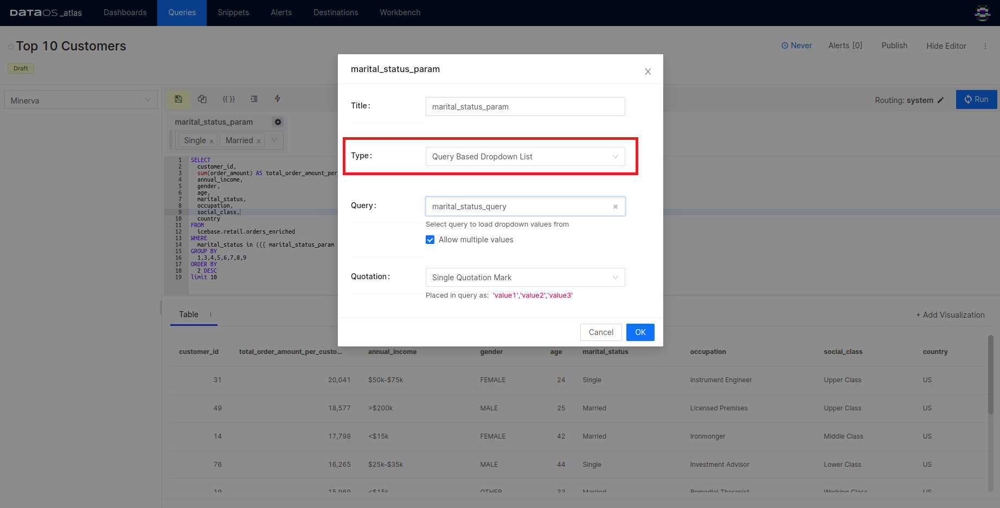
You have to save and publish the query whose output is to be used as dropdown options.
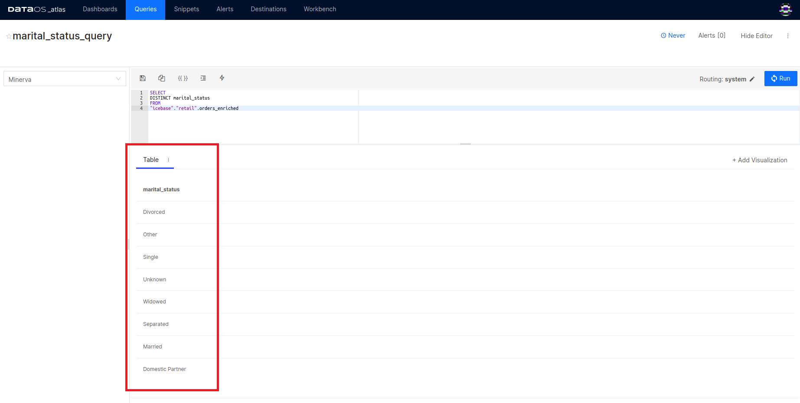
Multiple Parameters¶
To create a query with multiple parameters, simply place a {{ }} for every parameter you wish to substitute a value for in the query. Provide unique names to each of them.
Example: Two parameters are provided in the following query:
SELECT customer_id,
order_id,
order_amount,
order_status,
department_name,
category_name,
order_date,
date(order_date) AS order_dt,
month(order_date) AS order_month,
year(order_date) AS order_year
FROM icebase.retail.orders_enriched
WHERE order_status = {{order_status}}
AND (date(order_date) > date('{{ my_date.start }}')
AND date(order_date) <= date('{{ my_date.end }}'))
ORDER BY order_date
LIMIT 10
Query output shows the data for the parameter values given at the run time.
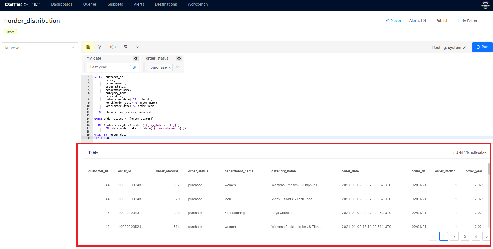
Query Parameters on Dashboards¶
When you add a visualization created based on a query having a parameter to your dashboard, the parameter value wizard will be available as shown in the below example dashboard. You can provide parameter values while refreshing specific or all visualizations on the dashboard.
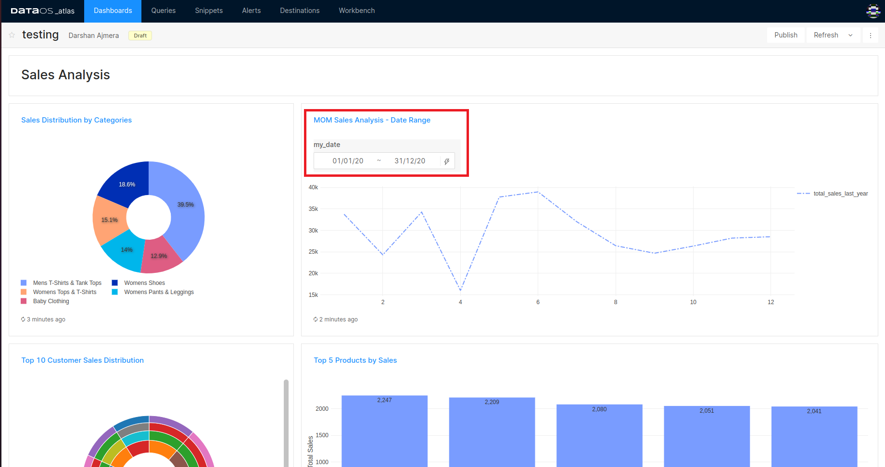